LAYER: InstructPix2Pix Identity-Layer Geometry Results
Stage-B targeted layer optimization with Stage-A identity-layer context
Overview
This report summarizes the current Stage-B identity-layer geometry runs. InstructPix2Pix weights are frozen. Only differentiable geometry parameters are optimized.
1. Method
Stage A ranked internal representations and tested whether identity-sensitive layers produced usable gradients to geometry parameters. Stage B targets selected frozen InstructPix2Pix layers directly.
Z = 1 - cosine_similarity(pool(layer(original)), pool(layer(perturbed))) loss = -Z
No visual counter-loss was used in these runs. This is important: destructive inputs can score highly if the internal layer distance increases.
2. Stage-A context
Gradient-selected layers
| layer | initial Z | final Z | dZ | grad norm | finite |
|---|---|---|---|---|---|
| vae_image_latent | 0.0011457006136576335 | 0.0023552775382995605 | 0.001209576924641927 | 0.0004485903461141318 | True |
| unet.conv_in | 0.0021939675013224282 | 0.0031431118647257486 | 0.0009491443634033203 | 0.00047768492630390893 | True |
| unet.up_blocks.0 | 2.7259190877278645e-05 | 2.7259190877278645e-05 | 0.0 | 0.0 | True |
| unet.mid_block | 1.7066796620686848e-05 | 1.7066796620686848e-05 | 0.0 | 0.0 | True |
| unet.down_blocks.0.attentions.0.transformer_blocks.0.attn2.to_out.0 | 2.086162567138672e-06 | 2.086162567138672e-06 | 0.0 | 0.0 | True |
ArcFace correlation context
| baseline | Spearman vs ArcFace | Pearson vs ArcFace |
|---|---|---|
| instruct_layer__unet.mid_block | 0.5080201394878334 | 0.43956538087994856 |
| instruct_layer__unet.up_blocks.0 | 0.5066684391531052 | 0.44825135270348926 |
| instruct_layer__unet.up_blocks.1.attentions.1.transformer_blocks.0 | 0.49454027111395493 | 0.41950434491725336 |
| instruct_layer__unet.down_blocks.3 | 0.49369099880681855 | 0.43408528174048544 |
| final_unet_prediction__add headphones__t14 | 0.4777947830346697 | 0.3909877274332537 |
| final_unet_prediction__add black sunglasses__t14 | 0.47694776902017616 | 0.39169253598600745 |
| final_unet_prediction__add black sunglasses__t10 | 0.4711601161249437 | 0.37713479811851414 |
| final_unet_prediction__add headphones__t10 | 0.47054560218219643 | 0.37803527246150836 |
| instruct_layer__unet.down_blocks.0.attentions.1.transformer_blocks.0.ff.net.1 | 0.45908856708299123 | 0.40072524451744895 |
| final_unet_prediction__add headphones__t3 | 0.4525361845868453 | 0.3560625376320527 |
3. Run matrix
| layers | prompts | images | runs | iterations | layer names |
|---|---|---|---|---|---|
| 1.0000 | 2.0000 | 4.0000 | 8.0000 | 400 | unet.conv_in |
4. Aggregate results
| layer | prompt | runs | mean dZ | max dZ | mean input SSIM | min input SSIM | mean output SSIM | invalid |
|---|---|---|---|---|---|---|---|---|
| unet.conv_in | add black sunglasses | 4.0000 | 0.0005332 | 0.002133 | 0.9972 | 0.9924 | 0.9951 | 0 |
| unet.conv_in | add headphones | 4.0000 | 0.0005209 | 0.002084 | 0.9948 | 0.9831 | 0.989 | 0 |
5. Per-run final values
| validity | layer | prompt | image | source | dZ | final Z | preserve w | input SSIM | input PSNR | output SSIM | output L2 | max disp |
|---|---|---|---|---|---|---|---|---|---|---|---|---|
| valid_or_visually_check | unet.conv_in | add black sunglasses | kamala_harris_01 | best_valid_checkpoint | 0.002133 | 0.00292 | 0 | 0.9924 | 29.686 | 0.9916 | 0.03639 | 2.4273 |
| valid_or_visually_check | unet.conv_in | add headphones | kamala_harris_01 | best_valid_checkpoint | 0.002084 | 0.00287 | 0 | 0.9831 | 26.229 | 0.9775 | 0.05752 | 4.4882 |
| valid_or_visually_check | unet.conv_in | add black sunglasses | barack_obama_01 | best_valid_checkpoint | 0 | 0.0006208 | 0 | 0.9987 | 38.315 | 0.9974 | 0.01786 | 0.5777 |
| valid_or_visually_check | unet.conv_in | add black sunglasses | joe_biden_01 | best_valid_checkpoint | 0 | 0.0004035 | 0 | 0.999 | 39.672 | 0.9939 | 0.02655 | 0.5777 |
| valid_or_visually_check | unet.conv_in | add black sunglasses | michelle_obama_01 | best_valid_checkpoint | 0 | 0.0003031 | 0 | 0.9987 | 41.838 | 0.9976 | 0.01372 | 0.5777 |
| valid_or_visually_check | unet.conv_in | add headphones | barack_obama_01 | best_valid_checkpoint | 0 | 0.0006208 | 0 | 0.9987 | 38.315 | 0.9957 | 0.0234 | 0.5777 |
| valid_or_visually_check | unet.conv_in | add headphones | joe_biden_01 | best_valid_checkpoint | 0 | 0.0004035 | 0 | 0.999 | 39.672 | 0.9884 | 0.03704 | 0.5777 |
| valid_or_visually_check | unet.conv_in | add headphones | michelle_obama_01 | best_valid_checkpoint | 0 | 0.0003031 | 0 | 0.9987 | 41.838 | 0.9943 | 0.01793 | 0.5777 |
6. Image strips
unet.conv_in / add black sunglasses / kamala_harris_01
Validity: valid_or_visually_check dZ: 0.002133 input SSIM: 0.9924 output SSIM: 0.9916
/home/interns/Desktop/layer/identity_layers/outputs/stage_b_spatial_bestvalid_400/runs/unet_conv_in/add_black_sunglasses/kamala_harris_01
unet.conv_in / add headphones / kamala_harris_01
Validity: valid_or_visually_check dZ: 0.002084 input SSIM: 0.9831 output SSIM: 0.9775
/home/interns/Desktop/layer/identity_layers/outputs/stage_b_spatial_bestvalid_400/runs/unet_conv_in/add_headphones/kamala_harris_01
unet.conv_in / add black sunglasses / barack_obama_01
Validity: valid_or_visually_check dZ: 0 input SSIM: 0.9987 output SSIM: 0.9974
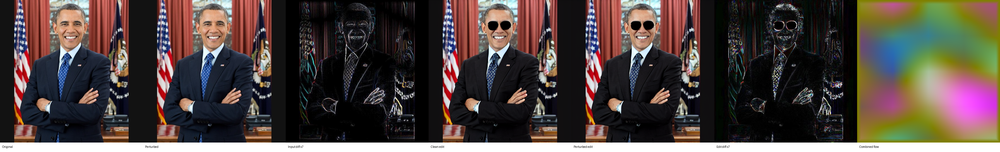
/home/interns/Desktop/layer/identity_layers/outputs/stage_b_spatial_bestvalid_400/runs/unet_conv_in/add_black_sunglasses/barack_obama_01
unet.conv_in / add black sunglasses / joe_biden_01
Validity: valid_or_visually_check dZ: 0 input SSIM: 0.999 output SSIM: 0.9939
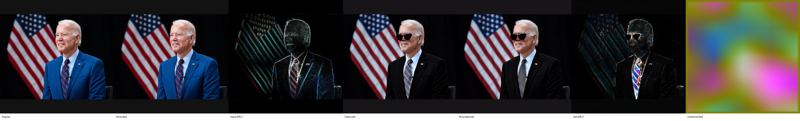
/home/interns/Desktop/layer/identity_layers/outputs/stage_b_spatial_bestvalid_400/runs/unet_conv_in/add_black_sunglasses/joe_biden_01
unet.conv_in / add black sunglasses / michelle_obama_01
Validity: valid_or_visually_check dZ: 0 input SSIM: 0.9987 output SSIM: 0.9976
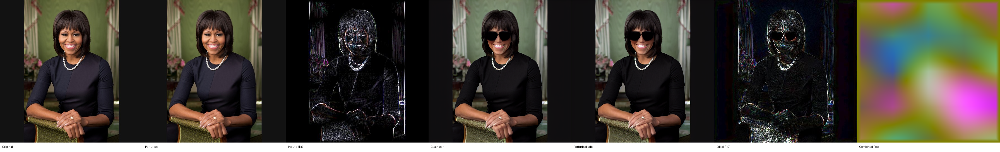
/home/interns/Desktop/layer/identity_layers/outputs/stage_b_spatial_bestvalid_400/runs/unet_conv_in/add_black_sunglasses/michelle_obama_01
unet.conv_in / add headphones / barack_obama_01
Validity: valid_or_visually_check dZ: 0 input SSIM: 0.9987 output SSIM: 0.9957
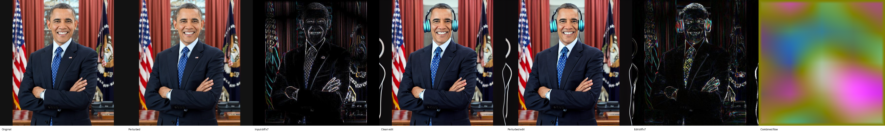
/home/interns/Desktop/layer/identity_layers/outputs/stage_b_spatial_bestvalid_400/runs/unet_conv_in/add_headphones/barack_obama_01
unet.conv_in / add headphones / joe_biden_01
Validity: valid_or_visually_check dZ: 0 input SSIM: 0.999 output SSIM: 0.9884
/home/interns/Desktop/layer/identity_layers/outputs/stage_b_spatial_bestvalid_400/runs/unet_conv_in/add_headphones/joe_biden_01
unet.conv_in / add headphones / michelle_obama_01
Validity: valid_or_visually_check dZ: 0 input SSIM: 0.9987 output SSIM: 0.9943
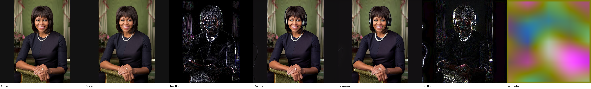
/home/interns/Desktop/layer/identity_layers/outputs/stage_b_spatial_bestvalid_400/runs/unet_conv_in/add_headphones/michelle_obama_01
7. Graphs
Cross-run graphs
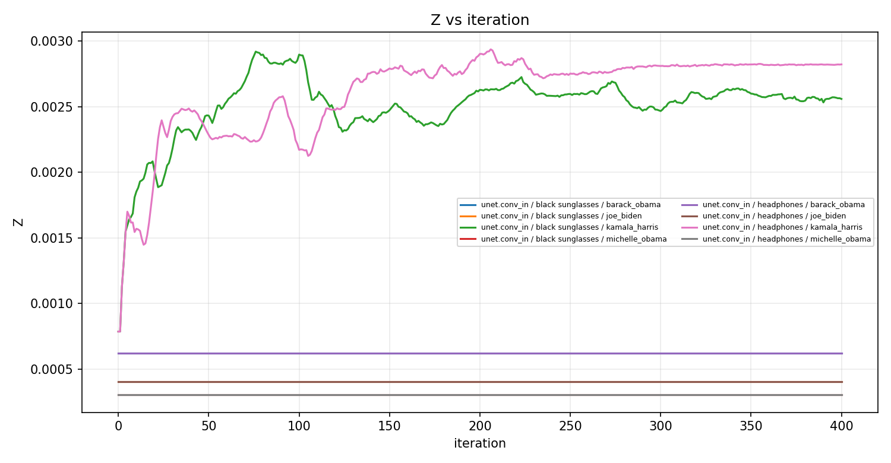
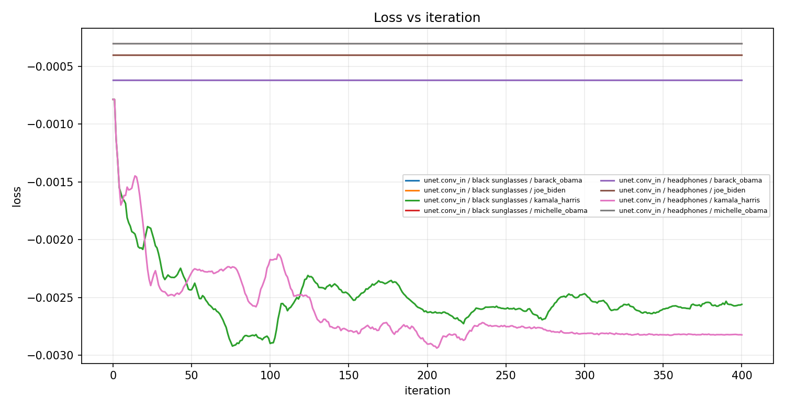
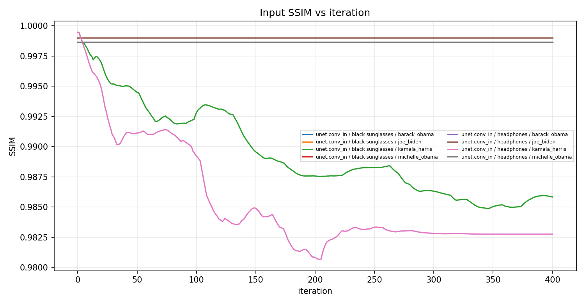
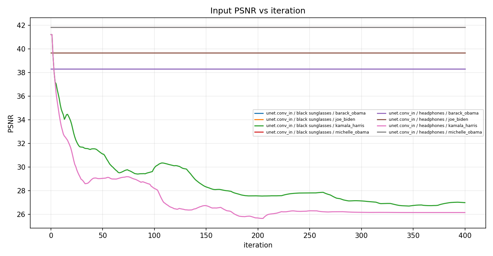
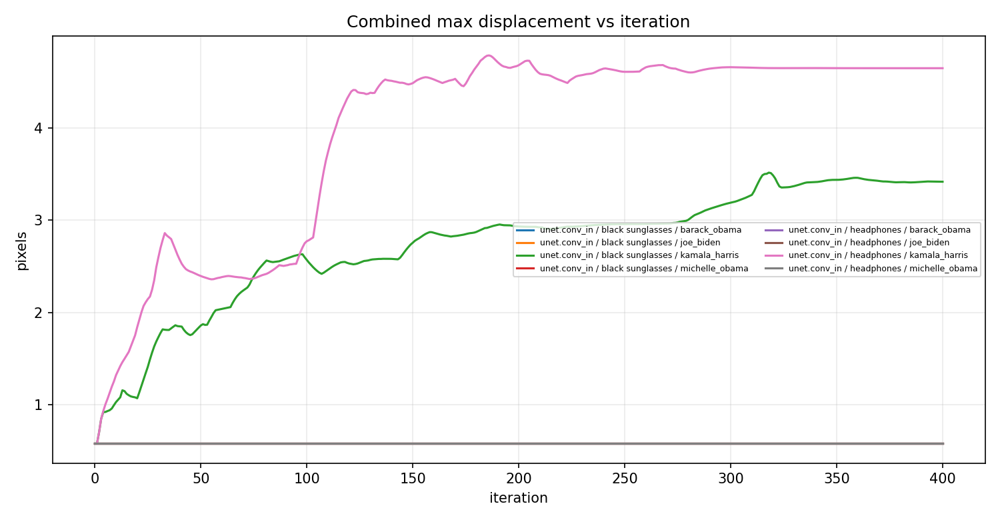
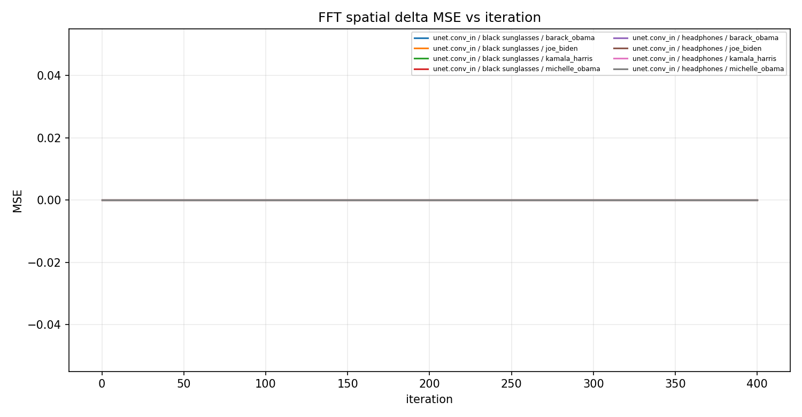
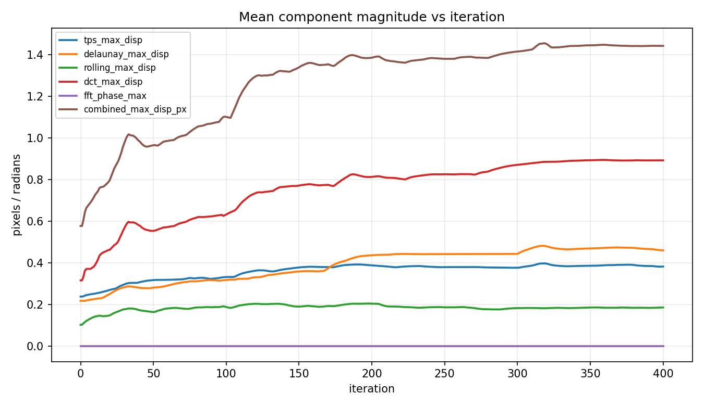
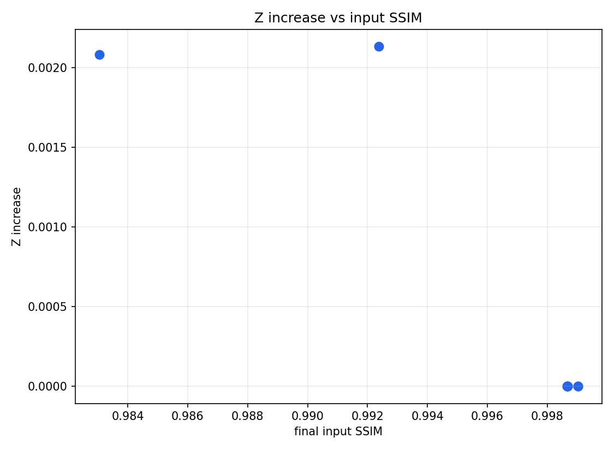
8. Notes
- Results folder: /home/interns/Desktop/layer/identity_layers/outputs/stage_b_spatial_bestvalid_400
- Runs collected: 8
- Missing artifacts: 0